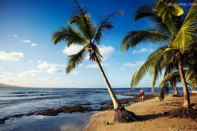

Puerto Rico
United States to Puerto Rico in the Caribbean dominions into the recent Greek debt crisis. Governor of Puerto Rico recently said that due to the cash shortage and to rebuild the economy, the government may be unable to repay $ 72 billion of debt.
Prior to the corporate tax breaks and lower environmental standards than the United States, Puerto Rico has attracted many US companies to set up factories here, but tax incentives came to an end in 2006, the Puerto Rican economy to lose support. Since 2006, Puerto Rico recession. To stimulate economic growth, the Puerto Rican government borrowed heavily, but the economy does not pick up,Puerto Rico now has per capita debt levels are higher than any US state. As the United States overseas dominions, although the residents of Puerto Rico are US citizens, but not with other US state or city the same status, which means that Puerto Rico can not be the same as Detroit through bankruptcy protection to restructure its debt. Last month, the US government has said it has no intention to pay rescue Puerto Rico, will provide technical guidance to ensure the rational use of all the options in Puerto Rico currently have. This has driven bond yields soared Puerto Rico. However, Reuters reported that the White House said the United States will urge Congress to amend the bill to allow Puerto Rico to declare bankruptcy.
The living standards of the people of Puerto Rico, the first place in Latin America, industrial, manufacturing, tourism, clothing and electronics industry as the main production department. Manufacturing accounts for 41% of the value of gross national product (GNP). Construction industry output value of $1987 in 2.5 billion, the rapid development of energy production, hydraulic and biogas power generation in 1985 to 11.938 billion degrees, other electric power is 209 million degrees.
In recent years, due to the densely populated, has been grim employment situation. Tourism has developed rapidly in recent years. Unemployment declined from 21% in 1985 to 13.8% in 1996
The Total: Foreign capital, especially in the United States control of the Puerto Rico hungry main sectors of the economy. Puerto Rico in the Caribbean and Latin American countries economic development relationship. The gross national product of $77.4 billion in 2007.
Industrial: In 1996, industrial output value accounted for 43.5% of gross national product (GNP). Mainly include machinery manufacturing, construction, mining, chemical, plastics, petroleum, food processing and beverage industries, working population accounts for 2.9% of the total population of labor
agricultural： This company mainly produces cotton, coffee, sweet potato, tobacco, fruit, etc. In 1994, 2240 tons of fish harvest. In 1996, forestry and fisheries accounted for 0.7% of the gross national product, population accounts for 2.9% of the total population of labor employed
Services: In 1996, the output value accounted for 58% of the gross national product, employment population accounts for 76% of the total population of labor.
The tourism industry：
From 1995 to 1996, 4.11 million visits of tourists, tourism income of nearly $1.9 billion, 72% of visitors from the United States. Main attractions are: the old SAN Juan, SAN Juan cathedral, cloud cover rain forests.

Over the past decade, Puerto Rico's economy has been in a recession. After five consecutive years of decline, the fiscal year 2012 real gross national product (GNP), after adjusting for inflation rose 0.9%, in 2013 rose only 0.3%, significantly lower than the growth rate of the US mainland states. Monthly indicators of Puerto Rico Government Development Bank also showed that economic stability but at a lower level. Puerto Rico's labor market remains weak. Between 2006 and 2010, the overall non-farm employment decreased by approximately 10%, and then gradually stabilized. Employment in the private sector increased slightly, which, leisure and hospitality services sector, professional and business services sector, employment creation and private education and health services industry is relatively fast. Now, employment in these industries is far more than its pre-recession level. Lower labor force participation rates and higher unemployment may still be the biggest challenge facing the economy of Puerto Rico. Young and less educated workers in the labor force participation rate is low, it is an important factor affecting the competitiveness of Puerto Rico. The unemployment rate has been higher than the US mainland a few percentage points. Although the unemployment rate in Puerto Rico so far has been reduced by 1%, but compared to the US mainland is still quite different. In addition, the lack of employment opportunities in the labor market caused by the relocation of a large number of residents of Puerto Rico, accelerating the reduction of the population of Puerto Rico. A chronically weak economic growth aggravated the financial problems of Puerto Rico: Puerto Rico's public debt has been rising for decades. Recession and persistent fiscal deficits caused by the accumulation of debt. Puerto Rico outstanding debt proportion of GNP year 2013 increased to 100% from 60% in 2000.